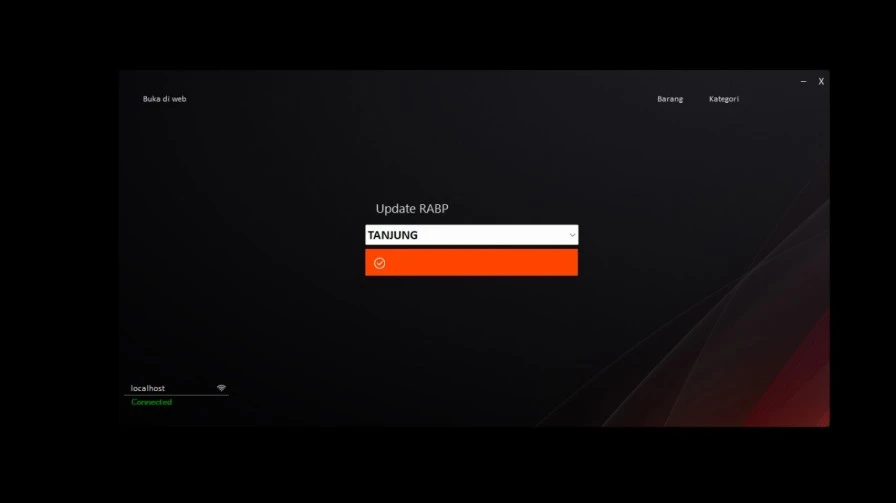
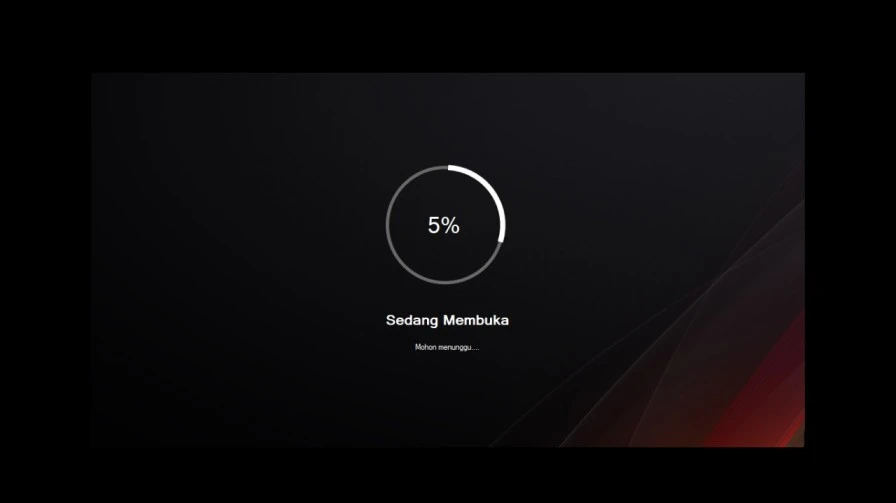
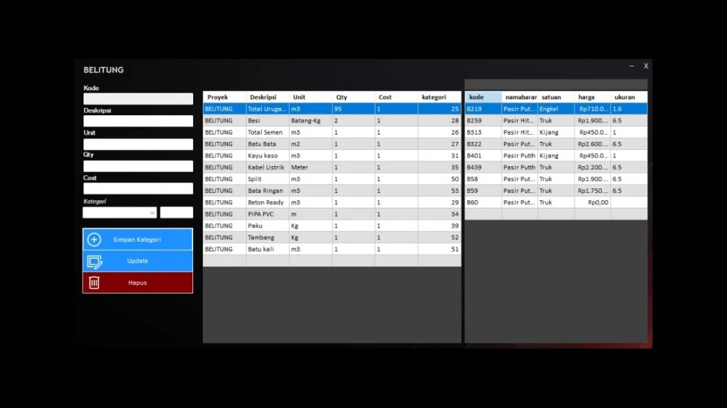
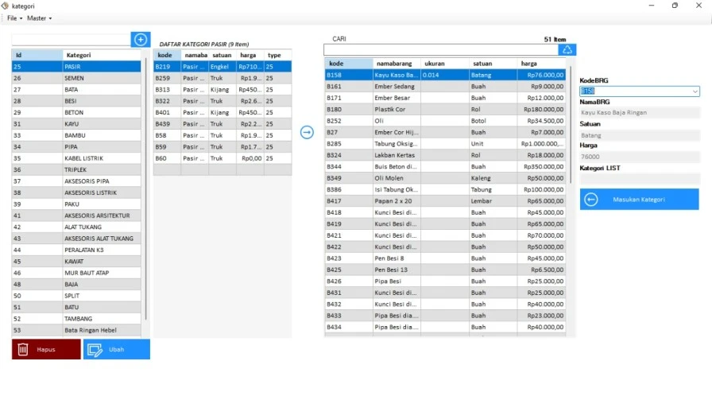
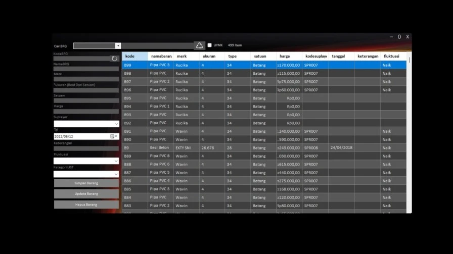

Sistem informasi Rancangan Anggaran Biaya Proyek sederhana ini dibuat menggunakan Visual Studio 2014 Menggunakan bahasa pemograman Visual Basic lalu migrasi ke 2019 - 2022 dengan MYSQL 5.6 sebagai database nya. aplikasi ini dibuat pada tahun 2018 untuk memudahkan dalam pengelolaan RABP dan Barang.

Rancangan yang dilakukan berasal dari hasil analisa pada masa kerja di PT. Raya Azura Persada tahun itu.
Fitur unggulan:
- Mengkonversi qty dari suatu kontrak proyek / untuk simulasi rancangan sementara pada pembelian dari suatu matrial yang up to date dari MAN. KTR seperti halnya harga besi yang setiap harinya berubah-ubah, sehingga sangat memudahkan sekali untuk perhitungan rancangan anggaran biaya proyek yang sangat realistis dan juga terkelola dengan baik
- Pengkategorian suatu barang untuk dikonversi menjadi sebuah satuan baru sesuai kebutuhan perhitungan rancangan anggaran biaya proyek
- Kelola Barang, seperti insert, update, delete, read




Bahan pembuatan
- Visual Studio 2014
- Mysql 5.6
- Bunifu